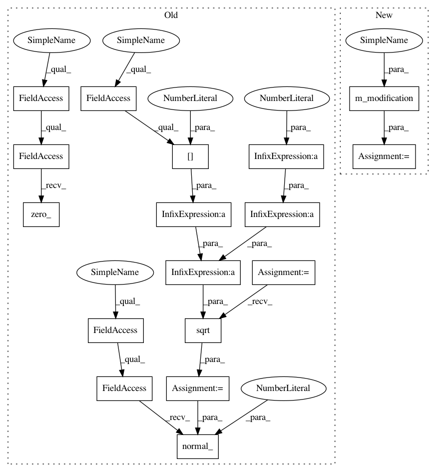

a2edf27ded5e9c6fbd06e58dbceb7a5f4101bca0,autokeras/pretrained/voice_generator/deepvoice3_pytorch/modules.py,,conv1d,#Any#Any#Any#Any#Any#,64
Before Change
def conv1d(in_channels, out_channels, kernel_size, dropout=0, std_mul=4.0, **kwargs):
from .conv import Conv1d
m = Conv1d(in_channels, out_channels, kernel_size, **kwargs)
std = math.sqrt((std_mul * (1.0 - dropout)) / (m.kernel_size[0] * in_channels))
m.weight.data.normal_(mean=0, std=std)
m.bias.data.zero_()
return nn.utils.weight_norm(m)
def conv_transpose1d(in_channels, out_channels, kernel_size, dropout=0,
After Change
def conv1d(in_channels, out_channels, kernel_size, dropout=0, std_mul=4.0, **kwargs):
from .conv import Conv1d
m = Conv1d(in_channels, out_channels, kernel_size, **kwargs)
m = m_modification(m,in_channels,dropout,std_mul)
return nn.utils.weight_norm(m)
def conv_transpose1d(in_channels, out_channels, kernel_size, dropout=0,
In pattern: SUPERPATTERN
Frequency: 4
Non-data size: 17
Instances
Project Name: jhfjhfj1/autokeras
Commit Name: a2edf27ded5e9c6fbd06e58dbceb7a5f4101bca0
Time: 2019-03-29
Author: 44738198+KailinXu@users.noreply.github.com
File Name: autokeras/pretrained/voice_generator/deepvoice3_pytorch/modules.py
Class Name:
Method Name: conv1d
Project Name: keras-team/autokeras
Commit Name: a2edf27ded5e9c6fbd06e58dbceb7a5f4101bca0
Time: 2019-03-29
Author: 44738198+KailinXu@users.noreply.github.com
File Name: autokeras/pretrained/voice_generator/deepvoice3_pytorch/modules.py
Class Name:
Method Name: conv1d
Project Name: keras-team/autokeras
Commit Name: a2edf27ded5e9c6fbd06e58dbceb7a5f4101bca0
Time: 2019-03-29
Author: 44738198+KailinXu@users.noreply.github.com
File Name: autokeras/pretrained/voice_generator/deepvoice3_pytorch/modules.py
Class Name:
Method Name: conv_transpose1d